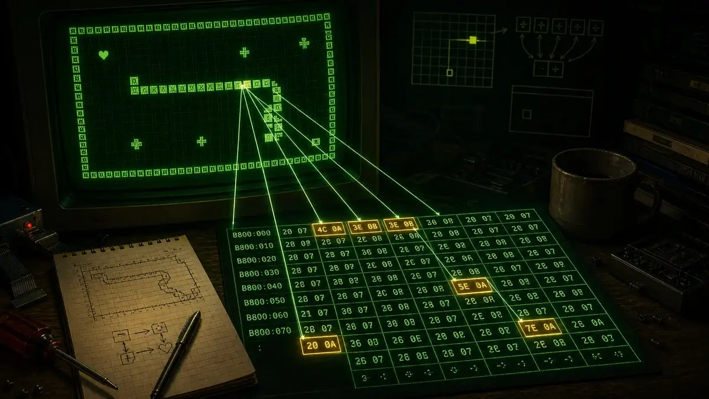
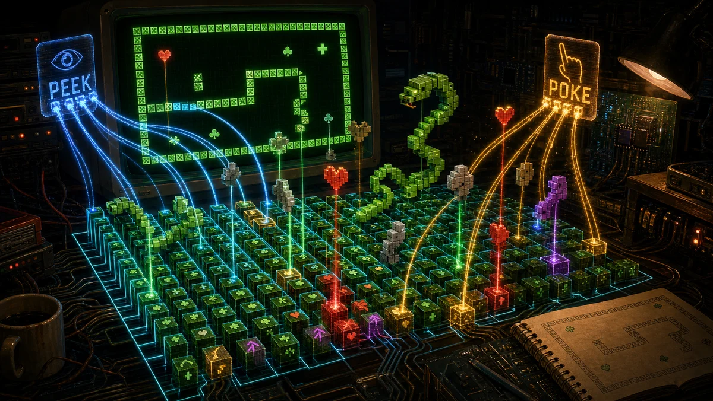

Дивіться, як рухаються байти
У Sneekie немає окремого "обʼєкта змії". Змія, стіни, серця і стріли — це просто символи в памʼяті екрана, а гра читає і записує цю памʼять напряму. Керуйте нижче і дивіться, що відбувається: екран зверху і сирі байти памʼяті під ним — це ті самі байти. Кожен хід складається з кількох peek і poke, які показані праворуч наживо. Зʼїжте серце — і десь зʼявиться трефа; чотири стріли патрулюють самостійно.

Кожна клітинка має два байти (символ, потім атрибут яскравості/кольору), адресовані як offset = (рядок − 1) × 160 + (стовпець − 1) × 2. Це кут 22×15 справжнього екрана 80×25 — та сама формула і той самий крок рядка у 160 байтів.
Ось увесь трюк коду 1988 року. Подивіться його у вихідному коді на сторінці пояснення або поруч із JavaScript-портом на сторінці міграції.
